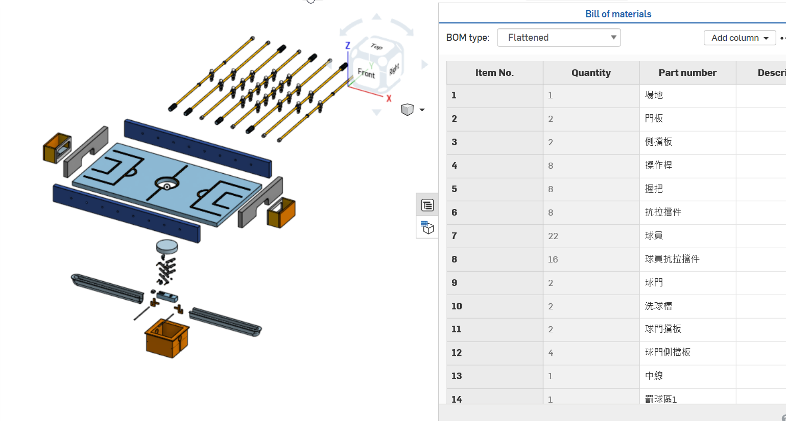

week1
我們在上課做出屬於自己的可攜程式放入我們自己的隨身碟，以便於我們往後上課進行老師的要求的任務。與之前老師給我們的可攜系統不同的地方是我們這次都由自己做出，自己打造自己的環境。
week2
因為二二八彈性放假，所以在晚上進行補課，一天連上8堂課以至於許多東西都一次性下來有點吸收不好，希望下周前可以將進度補齊。
week3
上課中利用老師的亂數分組的程式碼進行班上亂數分組，雖然老師多次都說就決定是這次的分組名單，但最後分了5次，卻還是說分組留到下周進行，使我既期待又害怕的等待分組名單。
week4
今天終於將分組確定了，然後老師要求我們將組別的Github領取完成並且將組員都加入組別裡，起初老師說不要讓倉儲空無一物，要放點東西進去，經過太久，之前我們如何放入東西到組別倉儲都忘了，但經由老師檢查且提醒我們，才使我又想起如何建立內容。
week5
分配了工作，我的工作分配到了維護簡報，然而大家做完的東西，最後要經由報告呈現出，使得簡報的重要度不亞於其他的比重，我會更加認真的對待自己組別的簡報。
week6
這週在等待組員的部分進展，再將它們一一呈現在簡報上，以至於至此週簡報部分只有開頭，但內容還缺乏。
week7
~清明節連假~
week8
在一週就要期中了，上課老師說了期中的作法，老師若不提前先說明中考的內容，我可能會在期中考周當天戰戰兢兢的。
week9
期中
week10
老師將手足球程式示範的檔案發布在網址下方，所以就下載後參考老師所寫的程式，並其了解他。
week11
這周跟同學討論，得知使用程式可以檢測出案件相對應的程式代碼。所以加以做出人與人的操作。
week12
老師將程式寫入在球台上，我在試著嘗試如何增加程式讓其他的桿件可以作動，最後雖然把程式分在每隻操作桿上，但卻達到每個球員都作動的結果。
week13
組員將手足球的東西完全繪製完成，我依照工作分配進行自己的工作製作出零件表核爆炸圖。

week14
繼續將手足球模擬的部分細節完成，左右移動時會造成操作桿上的止拉擋件會穿過機台本身，所以算出距離後加以限制，使他離不開機台。
week15
把14周部分未完成的模擬做完，人與人的機台練習完成。
week16
端午節